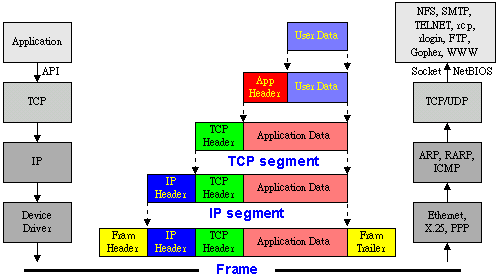
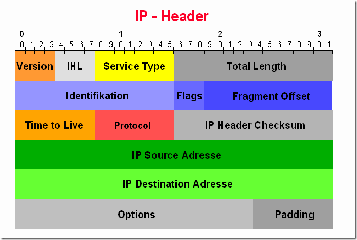
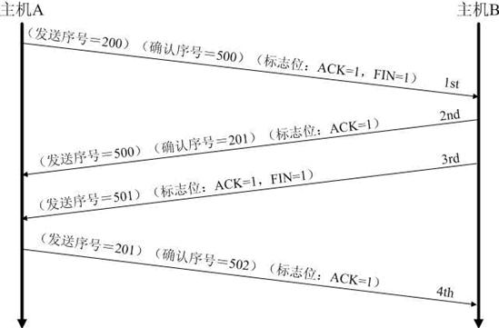

tcpdump查看三次握手
原文：http://chaoswork.com/blog/2012/04/06/tcpdump%E6%9F%A5%E7%9C%8B%E4%B8%89%E6%AC%A1%E6%8F%A1%E6%89%8B/
以前学TCP三次握手也就停留在知道有三个箭头的程度，现在借助tcpdump这个工具可以很清晰的看出TCP协议是怎么建立连接以及传输数据的。 我首先运行了UNP书上的TCP回射服务器的程序，让其在9889端口监听，然后用tcpdump程序来截取本机的9889端口的通信数据包。命令行如下：
$ sudo tcpdump -i lo ‘port 9889 and tcp’ -X -s 0 -S
具体tcpdump的命令参数可以通过man tcpdump得知，不过这里用的比较重要的就是-X和-S，-X表明当分析和打印时, tcpdump 会打印每个包的头部数据, 同时会以16进制和ASCII码形式打印出每个包的数据(但不包括连接层的头部)。
-S表明打印TCP 数据包的顺序号时, 使用绝对的顺序号, 而不是相对的顺序号.比如我第一次用tcpdump查看tcp的三次握手时发现第三次握手的ack=1,这个ack就是相对的，因为tcpdump只在SYN包中显示绝对顺序号，而非SYN包则显示相对的，为了便于观察，在抓包时都采用来绝对的顺序号。
TCP_packet
为了能看懂tcpdump输出的格式，首先要知道TCP/IP的数据封装，大体如下图所示：

图片来自<TCP/IP 概論>: http://www2.meps.tp.edu.tw/documents/memo/TCP%EF%BC%8FIP%E6%A6%82%E8%AB%96/index.htm
上面命令-X参数限定了只截取上图中倒数第二个数据包，也就是只包含IP Header,TCP Header,Application Data.
IP Header
首先看IP Header的结构:

关于IP Header的结构，我还没有深入的学习，简单的字段解释如下：
-
Version:<4bits>,表明IP的版本，一般应该都是4或者6. -
IHL:<4bit>,Internet Header Length,表明IP头的长度，一个单位长度是32bit，上图中Options字段是非必须的，所以IP Header的长度最小是5x32bits.所以该字段最小值应该为5. -
Total Length:<16bits>,该字段表明了整个IP包的长度，包括IP Header,TCP Header和Application Data. -
IP Source Address:<32bits>,源IP地址，图中的Adresse是德文的Address,这个IP Header的图和下面TCP Header的图都是从德文网站上面找到的。 -
IP Destionation Address:<32bits>,目的IP地址。 -
Options:可选字段，后面的Padding表示不够32bits要用0来补齐。
举例来说，我用tcpdump抓到了这样一个包：
00:05:36.631501 IP localhost.54504 > localhost.9889: Flags [P.], seq 4289908547:4289908560, ack 2355231328, win 2050, options [nop,nop,TS val 28499978 ecr 28495907], length 13 0×0000: 4500 0041 1f63 4000 4006 1d52 7f00 0001 E..A.c@.@..R…. 0×0010: 7f00 0001 d4e8 26a1 ffb2 cf43 8c61 fa60 ……&….C.a.` 0×0020: 8018 0802 fe35 0000 0101 080a 01b2 e00a …..5………. 0×0030: 01b2 d023 6865 6c6c 6f20 776f 726c 647e …#hello.world~ 0×0040: 0a
可以看到第一个32bits的数据为4500，根据上面IP Header的定义，这个IP Header的长度为5，也就是5x32bits，将其整理出来如下：
+-+-+-+-+-+-+-+-+-+-+-+-+-+-+-+-+-+-+-+-+-+-+-+-+-+-+-+-+-+-+-+ | Ver: 4 | IHL: 5 | ToS: 00 | Total Length: 0041 | +-+-+-+-+-+-+-+-+-+-+-+-+-+-+-+-+-+-+-+-+-+-+-+-+-+-+-+-+-+-+-+ |Identification: 1f63 |F: 4 | Fragment Offset: 000 | +-+-+-+-+-+-+-+-+-+-+-+-+-+-+-+-+-+-+-+-+-+-+-+-+-+-+-+-+-+-+-+ | TTL: 40 | Protocol: 06 | Header Checksum: 1d52 | +-+-+-+-+-+-+-+-+-+-+-+-+-+-+-+-+-+-+-+-+-+-+-+-+-+-+-+-+-+-+-+ | Source Address: 7f00 0001 | +-+-+-+-+-+-+-+-+-+-+-+-+-+-+-+-+-+-+-+-+-+-+-+-+-+-+-+-+-+-+-+ | Destination Address: 7f00 0001 | +-+-+-+-+-+-+-+-+-+-+-+-+-+-+-+-+-+-+-+-+-+-+-+-+-+-+-+-+-+-+-+
TCP Header
下面是TCP Header的结构：

-
Source Port:<16bits>,源端口 -
Destination Port:<16bits>,目的端口。 -
Sequence Number:<32bits>,这个地方还有待研究，目前我是这样认为的，如果本TCP Header中的SYN(Synchronize sequence numbers)标志为0，则代表本TCP Header携带的数据第一个字节的序号；如果本TCP Header中的SYN标志为1，那么这个序号代表了ISN(initial sequence number)，也就是双方建立TCP连接时的初始序列号，那么本次TCP连接后在此方向上传输的第一个字节的编号应该为ISN+1. -
Acknowledge Number:<32bits>,这个字段仅当TCP Header中ACK标志为1时有效，代表了这个TCP Header的发送端所期望的下一个数据的序列号，与上文提到的Sequence Number配合使用。一旦两端通过TCP连接起来，那么这个字段应该总是有效的。 -
Data Offset:<4bits>,与IP Header中的IHL类似，单位长度也是32bits，代表了TCP Header的长度，TCP Options也是可选的，但是一般都会存在，所以这个字段的最小值为5，但是一般都会大于5. -
Options：不定长，每个选项的开始是1字节的kind字段，说明选项的类型。Kind=0:选项表结束（1字节）,Kind=1:无操作（1字节）,Kind=2：最大报文段长度（4字节）,Kind=3:窗口扩大因子（4字节）,Kind=8:时间戳（10字节） -
Data:终于，这个字段就是Application Data，我们要发送的数据就在这里。
同样是上面的包，TCP 段和其后紧跟的Data段的信息整理出来如下：
+-+-+-+-+-+-+-+-+-+-+-+-+-+-+-+-+-+-+-+-+-+-+-+-+-+-+-+-+-+-+-+ | Source Port: d4e8 | Destination Port: 26a1 | +-+-+-+-+-+-+-+-+-+-+-+-+-+-+-+-+-+-+-+-+-+-+-+-+-+-+-+-+-+-+-+ | Sequence Number: ffb2 cf43 | +-+-+-+-+-+-+-+-+-+-+-+-+-+-+-+-+-+-+-+-+-+-+-+-+-+-+-+-+-+-+-+ | Acknowledgment Number: 8c61 fa60 | +-+-+-+-+-+-+-+-+-+-+-+-+-+-+-+-+-+-+-+-+-+-+-+-+-+-+-+-+-+-+-+ |DO: 8 |Reserved: 0| Flags: 18| Window: 0802 | +-+-+-+-+-+-+-+-+-+-+-+-+-+-+-+-+-+-+-+-+-+-+-+-+-+-+-+-+-+-+-+ | Checksum: fe35 | Urgent Pointer: 0000 | +-+-+-+-+-+-+-+-+-+-+-+-+-+-+-+-+-+-+-+-+-+-+-+-+-+-+-+-+-+-+-+ | TCP Options: 0101 080a | +-+-+-+-+-+-+-+-+-+-+-+-+-+-+-+-+-+-+-+-+-+-+-+-+-+-+-+-+-+-+-+ | TCP Options: 01b2 e00a | +-+-+-+-+-+-+-+-+-+-+-+-+-+-+-+-+-+-+-+-+-+-+-+-+-+-+-+-+-+-+-+ | TCP Options: 01b2 d023 | +-+-+-+-+-+-+-+-+-+-+-+-+-+-+-+-+-+-+-+-+-+-+-+-+-+-+-+-+-+-+-+ | Data: 6865 6c6c 6f20 776f 726c 647e 0a | +-+-+-+-+-+-+-+-+-+-+-+-+-+-+-+-+-+-+-+-+-+-+-+-+-+-+-+-+-+-+-+
上面Data段的ascii码值为:”hello world~\n”
我在本机上截获的数据包如下，这里我用黄色背景表示IP段，用绿色背景表示TCP段，没有背景则是数据段。蓝色的字体是我的注释。
<1>00:05:20.346307 IP localhost.54504 > localhost.9889:
Flags [S], seq 4289908546 (client ISN) , win 32792,
options [mss 16396,sackOK,TS val 28495907 ecr 0,nop,wscale 4], length 0
0×0000: 4500 003c 1f61 4000 4006 1d59 7f00 0001 E..<.a@.@..Y….
0×0010: 7f00 0001 d4e8 26a1 ffb2 cf42 0000 0000 ……&….B….
0×0020: a002 8018 fe30 0000 0204 400c 0402 080a …..0….@…..
0×0030: 01b2 d023 0000 0000 0103 0304 …#……..
<2>00:05:20.346333 IP localhost.9889 > localhost.54504: Flags [S.],
seq 2355231327 (server ISN) , ack 4289908547 (ack=client ISN+1) , win 32768,
options [mss 16396,sackOK,TS val 28495907 ecr 28495907,nop,wscale 4],
length 0
0×0000: 4500 003c 0000 4000 4006 3cba 7f00 0001 E..<..@.@.<…..
0×0010: 7f00 0001 26a1 d4e8 8c61 fa5f ffb2 cf43 ….&….a._…C
0×0020: a012 8000 fe30 0000 0204 400c 0402 080a …..0….@…..
0×0030: 01b2 d023 01b2 d023 0103 0304 …#…#….
<3>00:05:20.346347 IP localhost.54504 > localhost.9889: Flags [.],
ack 2355231328 (ack=server ISN+1) , win 2050,
options [nop,nop,TS val 28495907 ecr 28495907],length 0
0×0000: 4500 0034 1f62 4000 4006 1d60 7f00 0001 E..4.b@.@..`….
0×0010: 7f00 0001 d4e8 26a1 ffb2 cf43 8c61 fa60 ……&….C.a.`
0×0020: 8010 0802 fe28 0000 0101 080a 01b2 d023 …..(………#
0×0030: 01b2 d023 …#
#tcp 3 way handshake,可以看出，这3个包都没有包含数据，由于第一次和第二次握手含有最大报文长度而第三次只含有时间戳所以TCP Header的长度不同。
<4>00:05:36.631501 IP localhost.54504 > localhost.9889: Flags [P.],
seq 4289908547:4289908560, ack 2355231328,
win 2050, options [nop,nop,TS val 28499978 ecr 28495907], length 13
0×0000: 4500 0041 1f63 4000 4006 1d52 7f00 0001 E..A.c@.@..R….
0×0010: 7f00 0001 d4e8 26a1 ffb2 cf43 8c61 fa60 ……&….C.a.`
0×0020: 8018 0802 fe35 0000 0101 080a 01b2 e00a …..5……….
0×0030: 01b2 d023 6865 6c6c 6f20 776f 726c 647e …#hello.world~
0×0040: 0a .
<5>00:05:36.631964 IP localhost.9889 > localhost.54504: Flags [.],
ack 4289908560, win 2048, options [nop,nop,TS val 28499979 ecr 28499978],
length 0
0×0000: 4500 0034 2a43 4000 4006 127f 7f00 0001 E..4*C@.@…….
0×0010: 7f00 0001 26a1 d4e8 8c61 fa60 ffb2 cf50 ….&….a.`…P
0×0020: 8010 0800 fe28 0000 0101 080a 01b2 e00b …..(……….
0×0030: 01b2 e00a ….
<6>00:05:36.632024 IP localhost.9889 > localhost.54504: Flags [P.],
seq 2355231328:2355231341, ack 4289908560, win 2048,
options [nop,nop,TS val 28499979 ecr 28499978], length 13
0×0000: 4500 0041 2a44 4000 4006 1271 7f00 0001 E..A*D@.@..q….
0×0010: 7f00 0001 26a1 d4e8 8c61 fa60 ffb2 cf50 ….&….a.`…P
0×0020: 8018 0800 fe35 0000 0101 080a 01b2 e00b …..5……….
0×0030: 01b2 e00a 6865 6c6c 6f20 776f 726c 647e ….hello.world~
0×0040: 0a .
<7>00:05:36.632078 IP localhost.54504 > localhost.9889: Flags [.],
ack 2355231341, win 2050, options [nop,nop,TS val 28499979 ecr 28499979],
length 0
0×0000: 4500 0034 1f64 4000 4006 1d5e 7f00 0001 E..4.d@.@..^….
0×0010: 7f00 0001 d4e8 26a1 ffb2 cf50 8c61 fa6d ……&….P.a.m
0×0020: 8010 0802 fe28 0000 0101 080a 01b2 e00b …..(……….
0×0030: 01b2 e00b ….
#4,5,6,7这4个包表示client向server发送了”hello world~\n”,然后server回射给client
<8>00:06:11.448332 IP localhost.54504 > localhost.9889: Flags [P.],
seq 4289908560:4289908587, ack 2355231341, win 2050,
options [nop,nop,TS val 28508683 ecr 28499979], length 27
0×0000: 4500 004f 1f65 4000 4006 1d42 7f00 0001 E..O.e@.@..B….
0×0010: 7f00 0001 d4e8 26a1 ffb2 cf50 8c61 fa6d ……&….P.a.m
0×0020: 8018 0802 fe43 0000 0101 080a 01b3 020b …..C……….
0×0030: 01b2 e00b 6162 6364 6566 6768 696a 6b6c ….abcdefghijkl
0×0040: 6d6e 6f70 7172 7374 7576 7778 797a 0a mnopqrstuvwxyz.
<9>00:06:11.448524 IP localhost.9889 > localhost.54504: Flags [P.],
seq 2355231341:2355231368, ack 4289908587, win 2048,
options [nop,nop,TS val 28508683 ecr 28508683], length 27
0×0000: 4500 004f 2a45 4000 4006 1262 7f00 0001 E..O*E@.@..b….
0×0010: 7f00 0001 26a1 d4e8 8c61 fa6d ffb2 cf6b ….&….a.m…k
0×0020: 8018 0800 fe43 0000 0101 080a 01b3 020b …..C……….
0×0030: 01b3 020b 6162 6364 6566 6768 696a 6b6c ….abcdefghijkl
0×0040: 6d6e 6f70 7172 7374 7576 7778 797a 0a mnopqrstuvwxyz.
<10>00:06:11.448578 IP localhost.54504 > localhost.9889: Flags [.],
ack 2355231368, win 2050, options [nop,nop,TS val 28508683 ecr 28508683],
length 0
0×0000: 4500 0034 1f66 4000 4006 1d5c 7f00 0001 E..4.f@.@..\….
0×0010: 7f00 0001 d4e8 26a1 ffb2 cf6b 8c61 fa88 ……&….k.a..
0×0020: 8010 0802 fe28 0000 0101 080a 01b3 020b …..(……….
0×0030: 01b3 020b ….
#8,9,10包的功能和4,5,6,7类似，表示client向server发送了”abcdefghijklmnopqrstuvwxyz\n”,然后server回射给client,但是这里第9个包的功能相当于5,6包的合并，为什么会出现这种情况？有待考证。
<11>00:06:14.752733 IP localhost.54504 > localhost.9889: Flags [F.],
seq 4289908587, ack 2355231368, win 2050,
options [nop,nop,TS val 28509509 ecr 28508683], length 0
0×0000: 4500 0034 1f67 4000 4006 1d5b 7f00 0001 E..4.g@.@..[....
0x0010: 7f00 0001 d4e8 26a1 ffb2 cf6b 8c61 fa88 ......&....k.a..
0x0020: 8011 0802 fe28 0000 0101 080a 01b3 0545 .....(.........E
0x0030: 01b3 020b ....
<12>00:06:14.753693 IP localhost.9889 > localhost.54504: Flags [F.],
seq 2355231368, ack 4289908588, win 2048,
options [nop,nop,TS val 28509509 ecr 28509509], length 0
0×0000: 4500 0034 2a46 4000 4006 127c 7f00 0001 E..4*F@.@..|….
0×0010: 7f00 0001 26a1 d4e8 8c61 fa88 ffb2 cf6c ….&….a…..l
0×0020: 8011 0800 fe28 0000 0101 080a 01b3 0545 …..(………E
0×0030: 01b3 0545 …E
<13>00:06:14.753727 IP localhost.54504 > localhost.9889: Flags [.],
ack 2355231369, win 2050, options [nop,nop,TS val 28509509 ecr 28509509],
length 0
0×0000: 4500 0034 1f68 4000 4006 1d5a 7f00 0001 E..4.h@.@..Z….
0×0010: 7f00 0001 d4e8 26a1 ffb2 cf6c 8c61 fa89 ……&….l.a..
0×0020: 8010 0802 fe28 0000 0101 080a 01b3 0545 …..(………E
0×0030: 01b3 0545 …E
#11,12,13包是关闭TCP的连接，理论上来说这里应该有4个包，因为需要4次握手才能关闭双方的TCP连接。这里我是这样理解的：之所以4次握手，是因为当client发送FIN给server后，表示client将不会再有数据发送过来，但是server还可能发送数据给client，比如telnet一个bbs，退出的时候可能跟你说句Goodbye然后才server才断开连接，这时候抓的包应该是4次，但是这里client断开后server也立刻断开了，所以server的ack和FIN一起发送了。这只是我的猜想，还有待进一步验证。 从这里可以看出tcpdump功能的强大。
TCP连接的状态
| LISTEN | 等待从任何远端TCP和端口的连接请求。 |
| SYN_SENT | 发送完一个连接请求后等待一个匹配的连接请求。 |
| SYN_RECEIVED | 发送连接请求并且接收到匹配的连接请求以后等待连接请求确认。 |
| ESTABLISHED | 表示一个打开的连接，接收到的数据可以被投递给用户。连接的数据传输阶段的正常状态。 |
| FIN_WAIT_1 | 等待远端TCP的连接终止请求，或者等待之前发送的连接终止请求的确认。 |
| FIN_WAIT_2 | 等待远端TCP的连接终止请求 |
| CLOSE_WAIT | 等待本地用户的连接终止请求 |
| CLOSING | 等待远端TCP的连接终止请求确认 |
| LAST_ACK | 等待先前发送给远端TCP的连接终止请求的确认（包括它字节的连接终止请求的确认） |
| TIME_WAIT | 等待足够的时间过去以确保远端TCP接收到它的连接终止请求的确认 |
| CLOSED | 不在连接状态（这是为方便描述假想的状态，实际不存在） |
在命令行用netstat -an命令可以看到其所处的连接状态。
建立三次握手的过程
1.首先客户端发送SYN包到服务端，为第一次握手，这时候客户端处于SYN_SENT等待状态 2.服务端收到了客户端发送的SYNC包，然后发送ACK（确认）及自身的SYN包进行回应（第二次握手），此时服务端处于SYN_RECEIVED（等待连接请求确认）状态 3.客户端收到了服务端的回应的ACK，然后将本身设置为ESTABLISHED状态，表示已经准备就绪，同时发出ACK应答（第三次握手） 4.服务端接收到了客户端发出的ACK应答，此处服务端也将自身设置为ESTABLISHED状态，从而实现双方收发数据
断开连接过程
由于TCP连接是全双工的，因此每个方向都必须单独进行关闭。这个原则是当一方完成它的数据发送任务后就能发送一个FIN来终止这个方向的连接。收到一个 FIN只意味着这一方向上没有数据流动，一个TCP连接在收到一个FIN后仍能发送数据。首先进行关闭的一方将执行主动关闭，而另一方执行被动关闭。
- 客户端A发送一个FIN，用来关闭客户A到服务器B的数据传送（报文段4）。
- 服务器B收到这个FIN，它发回一个ACK，确认序号为收到的序号加1（报文段5）。和SYN一样，一个FIN将占用一个序号。
- 服务器B关闭与客户端A的连接，发送一个FIN给客户端A（报文段6）。
- 客户端A发回ACK报文确认，并将确认序号设置为收到序号加1（报文段7）。

- 为什么建立连接协议是三次握手，而关闭连接却是四次握手呢？
这是因为服务端的LISTEN状态下的SOCKET当收到SYN报文的建连请求后，它可以把ACK和SYN（ACK起应答作用，而SYN起同步作用）放在一个报文里来发送。但关闭连接时，当收到对方的FIN报文通知时，它仅仅表示对方没有数据发送给你了；但未必你所有的数据都全部发送给对方了，所以你可以未必会马上会关闭SOCKET,也即你可能还需要发送一些数据给对方之后，再发送FIN报文给对方来表示你同意现在可以关闭连接了，所以它这里的ACK报文和FIN报文多数情况下都是分开发送的。
- 为什么TIME_WAIT状态还需要等2MSL后才能返回到CLOSED状态？
这是因为虽然双方都同意关闭连接了，而且握手的4个报文也都协调和发送完毕，按理可以直接回到CLOSED状态（就好比从SYN_SEND状态到ESTABLISH状态那样）；但是因为我们必须要假想网络是不可靠的，你无法保证你最后发送的ACK报文会一定被对方收到，因此对方处于LAST_ACK状态下的SOCKET可能会因为超时未收到ACK报文，而重发FIN报文，所以这个TIME_WAIT状态的作用就是用来重发可能丢失的ACK报文。